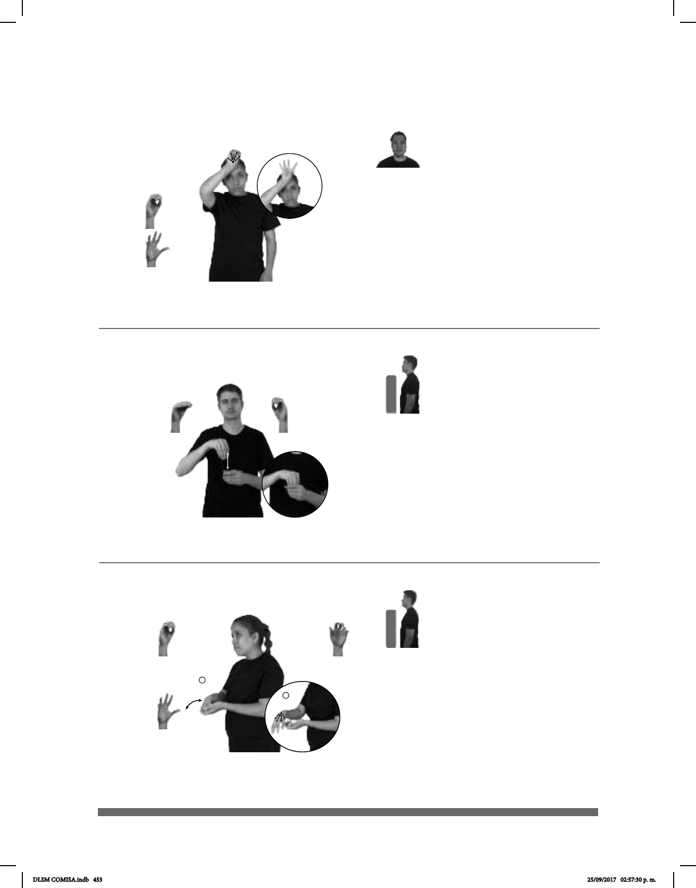

453
Seña: SB
MD O.5, MB O.1
MD palma hacia abajo.
MB palma hacia adentro.
La MD inicia a la altura del
pecho y termina detrás de MB. MB a la
altura del abdomen.
Movimiento: MD recto.
sust. m. Conocimiento de
algo que alguien mantiene oculto o que
sólo es compartido por un número
reducido de personas; cosa que no se
hace pública, se disimula o disfraza
para evitar que se descubra, conozca o
divulgue.
(O-77) Secreto
pos- MI ABUELO+MUJER SECRETOS pro-ELLA GUARDAR
Mi abuela guarda secretos.
1
2
(O-78) Sembrar
Seña: SB
MD seña que pasa de O.1 a
5.2, MB 5.11
MD palma hacia abajo. MB
palma hacia arriba.
A la altura del pecho. MD sobre
MB.
Movimiento: La MD se mueve formando
un arco hacia el frente.
Simula la acción de
esparcir semillas.
v. tr. Poner semillas de alguna
planta o repartirlas en cierta cantidad y
orden en la tierra que se va a cultivar.
CAMPESINO MAÍZ SEMBRAR
El campesino siembra maíz.
Seña: SM
Seña que pasa de O.1
a 5.2
Palma hacia fuera.
Sobre la frente.
Movimiento: Los dedos se extienden
repetidamente.
Cabeza inclinada
hacia la derecha.
Uno de los discípulos de
Jesús, que formaba parte del grupo de
los doce apóstoles.
(O-76) San Judas
SORDOS SAN-JUDAS ALABAR
Las personas sordas alaban a San Judas.
DLSM COMISA.indb 453 25/09/2017 02:57:30 p. m.